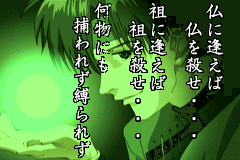

Gensou Maden Saiyuuki - Hangyaku no Toushin-taishi (Japan)
Stateless / Passcode 💾 MultiBoot 🎮 4P Link
Cartridge Identity
- Game Code
BGMJ(FamilyBGM)- Header Title
SAIYUUKI- Maker / Revision
DL/ rev0- ROM Size
- 8.0 MiB (8,388,608 B)
- Save Media
None / Unknown- SHA-256
66e5dc1771730304967dc07f11059ceeadfd9caeb886092a03778a27e0c04790- Engine / SDK Group
comm-018(17 families)
Screenshots

Link Cable & Multiplayer Communications
This title contains detected communication capabilities: 💾 MultiBoot 🎮 4P Link.
Detailed protocol specifications, SIO registers, Joybus commands, and MultiBoot sequences are documented in the Link & Multiplayer Reference.
- Multi-Player SIO (4P)
- 16-bit ring network · SIOCNT (
0x04000128) literals:0x009034,0x0090b4,0x0090e0· SIODATA32/SIOMULTI0 (0x04000120) literals:0x009440,0x295728,0x29b790 - Single-Cart MultiBoot
- Single-Cartridge MultiBoot (Download Play) client/server handler · Thumb SWI 0x25 (
0xDF25):0x06e938,0x06f580,0x086dc0,0x12d9de
Cartridge Storage Architecture: Stateless / Passcode
Zero non-volatile battery hardware: This cartridge PCB contains ROM only (no SRAM, Flash, or EEPROM chips). Progression is preserved via on-screen passcodes or session-only gameplay. No
.sav file is generated or required.
ROM Assets, Compression & Audio
- BIOS Compression
- LZ77 (
0x10): 3,428 streams · RLE (0x30): 0 streams - ROM Pointer Tables
- 40 tables (0 pointing to validated compressed streams)
- SDK Backup Tags
EEPROM_V122
Asset Map (formatkit.asset-map.v1)
Download BGMJ-r0-66e5dc1771730304.asset-map.json.gz (58,167 B (56.8 KiB)) Verified PASS · 5.75% coverage
| Metric | Bytes / Value | Entries |
|---|---|---|
| Identified | 34,467 B (33.7 KiB) (0.41%) | 460 |
| Mapped | 0 B (0.00%) | 0 |
| Opaque | 448,024 B (437.5 KiB) (5.34%) | 1 |
| Unknown | 7,906,117 B (7.54 MiB) (94.25%) | 419 |
| Total ROM Size | 8,388,608 B (8.00 MiB) | 880 |
| Coverage % | 5.75% | — |
| Entries w/ Code Refs | 484 / 880 (55.00%) | — |
Top Identified Formats: gfx.gba-palette (454 · 19,808 B (19.3 KiB)) · compress.bios-lz77 (4 · 13,835 B (13.5 KiB)) · audio.m4a-song-table (1 · 632 B) · gba.rom-header (1 · 192 B)
Largest unknown Extents (Headerless / Custom Asset Candidates)
| Offset | Size | Shannon Entropy | Code Refs |
|---|---|---|---|
0x004201D0 | 469,068 B (458.1 KiB) | 7.318 bits/B | 0 |
0x00492A3C | 456,396 B (445.7 KiB) | 7.298 bits/B | 0 |
0x005E0720 | 325,856 B (318.2 KiB) | 7.274 bits/B | 0 |
0x003B5940 | 305,352 B (298.2 KiB) | 7.357 bits/B | 0 |
0x0009960C | 254,264 B (248.3 KiB) | 6.387 bits/B | 0 |
gzip -dk BGMJ-r0-66e5dc1771730304.asset-map.json.gz && gbakit map verify rom.gba BGMJ-r0-66e5dc1771730304.asset-map.json
gbakit assets export rom.gba --asset-map BGMJ-r0-66e5dc1771730304.asset-map.json -o out/Text, Fonts & Scene Data
- Primary Text Encoding
- Shift-JIS (uncompressed) (
200Shift-JIS runs) - Font & VWF Indicators
- VWF Width Table 1bpp Font · BIOS SWIs: BitUnPack
0x10:24· LZ770x11/12:21· Huffman0x13:8· RLE0x14/15:8 - Scene & Packaging
8ROM pointer tables (≥32 entries,0≥200) ·47relativeu32TOCs ·210OAM metasprite hits
Hardware MMIO Subsystems
ppu_display0x8001b88,0x8002d84,0x80032fc